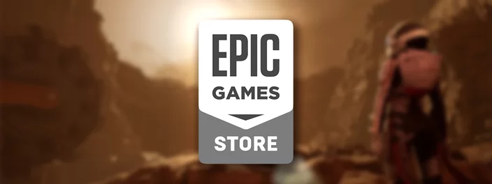

Notícias
Nesta semana, a Epic Games libera mais um novo jogo grátis: Deliver Us Mars. Seguindo o tema anterior, o título traz uma jornada rica e emocionante em Marte, sendo uma aventura de ficção científica que dá continuidade à Deliver Us The Moon. Com mecânicas que lembram Tomb Raider, o premiado jogo indie oferece belos gráficos e muitas horas de exploração.
Na trama de Deliver Us Mars, a humanidade está próxima de sua extinção — mas ainda pode haver esperança. Após receber um pedido de socorro vindo de Marte, a astronauta mais jovem da Terra, Kathy Johanson, é enviada para recuperar naves-colônia que podem garantir à sobrevivência humana.
